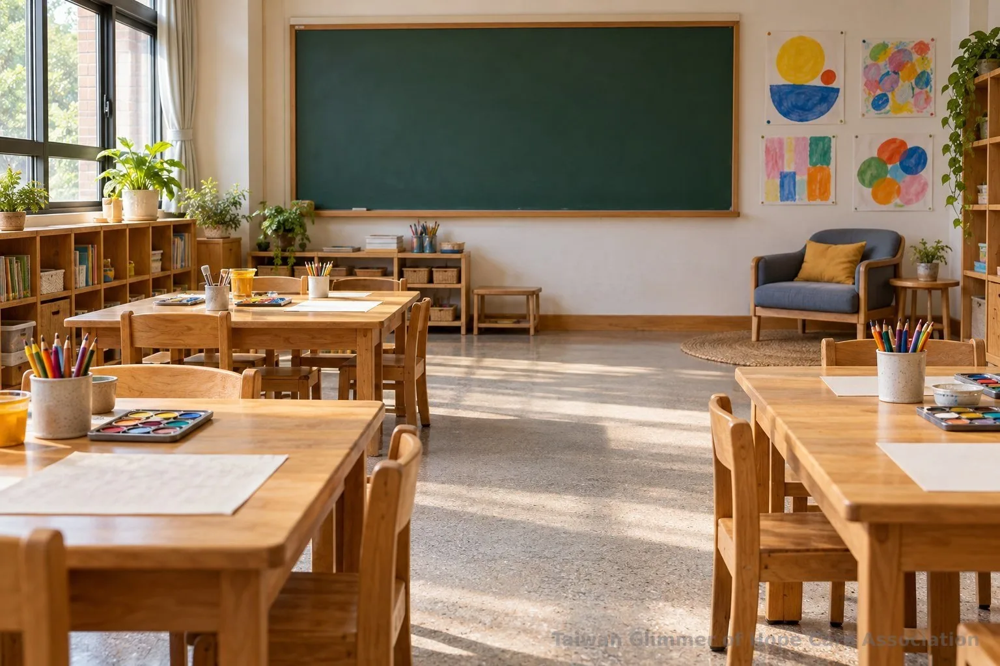
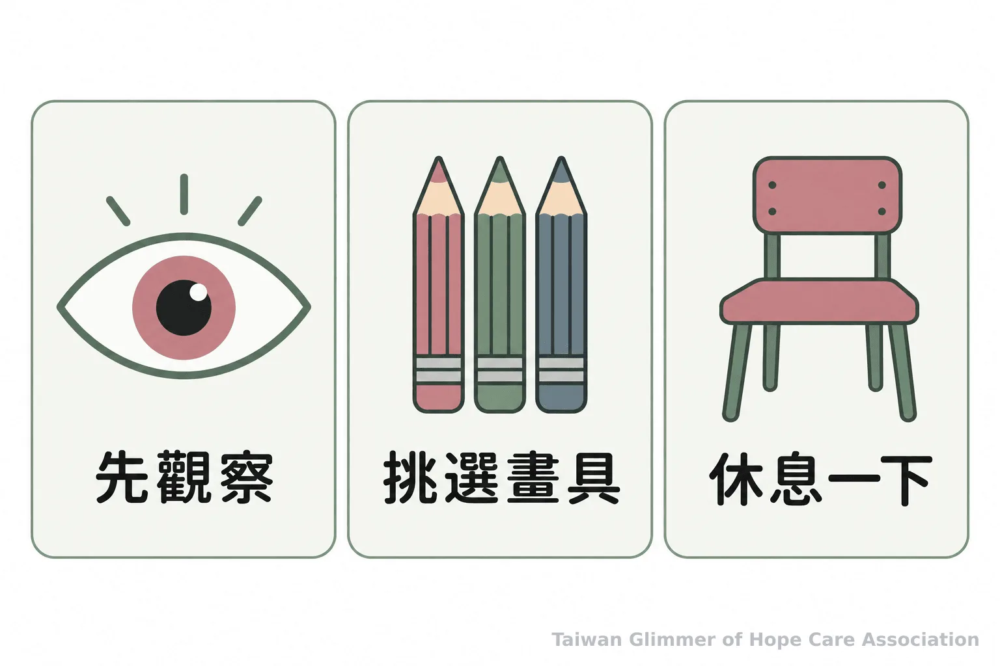
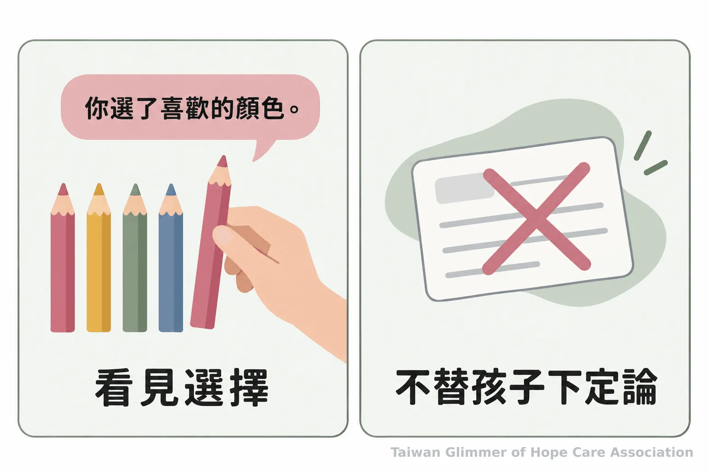

據點如何實踐創傷知情？從安全感到孩子的選擇
創傷知情著重調整大人的陪伴方式。從安全、可信任、選擇、合作與賦能，整理家長、教師與志工能落實的兒少陪伴做法。
創傷知情的陪伴｜系列五之 1
孩子走到教室門口，沒有立刻加入活動。大人可以先說明流程和選項，讓孩子熟悉環境。這不代表孩子經歷過創傷，同一反應可能有很多原因。創傷知情（trauma-informed）是調整服務方式的眼光，提醒家長、教師與志工留意互動是否安全、規則是否可預期，並避免追問或要求服從。想了解童年逆境，可參考童年創傷與保護因子的整理；背景知識不能取代個別評估。
一、先讓環境安全、流程可預期
先說明活動會怎麼進行、哪些地方可以休息、遇到不舒服時能向誰求助，並留意空間和說話方式是否讓孩子感到有壓力。
美國物質濫用與心理健康服務署（SAMHSA）列出安全、可信任與透明、同儕支持、合作與互惠、賦能與選擇、文化與歷史等原則。美國疾病管制與預防中心（CDC）提醒，創傷知情不能靠單一技巧完成，還要持續留意服務環境與互動。陪伴者可先介紹空間、說明活動流程；安排有變動時，提早告知。
孩子暫時不說話、沒有完成作品或選擇旁觀，都不應直接被解讀成不合作。大人可平穩地問：「你想先看看，還是要我陪你選材料？」避免多人圍問或責備孩子立即加入。安全感來自可預期的互動，不是要求孩子立刻信任大人。

二、信任從說到做到，也從保留選擇開始
把可以選擇的部分說明白，提供做得到的選項，並尊重孩子選擇先觀察、暫停或用自己的方式參與。
可信任的互動要如實說明安排與界線，例如：「今天先選材料，再開始創作；想休息可以跟我說。」計畫改變時，說明接下來怎麼做；承諾做得到的事，做不到的也坦白說。
選擇可以是先挑顏色或座位、自己畫或和同伴一起畫。問了就要保留選項，不要表面徵詢後仍替孩子決定。大人仍須說明安全界線，再討論可調整之處。不要要求孩子敘述創傷細節，或把公開分享當成參加條件。更多兒少活動界線，可參考藝術陪伴課程的安全設計。

三、肯定具體努力，不替孩子下結論
描述孩子實際做出的選擇或努力，讓他知道自己的聲音被聽見；不從單一反應推測創傷、疾病或家庭狀況。
大人可以說：「你剛才挑了自己喜歡的顏色」，或「休息後你決定回來看看作品。」這些回應描述看得見的行動，不要求孩子開心，也不把完成作品或分享心情當成唯一成果。孩子不想回答時，可以先停下來。
藝術活動有機會提供表達與交流的方式，但藝術陪伴不等於藝術治療，畫作也不能用來判定孩子是否受虐或作心理診斷。需要專業評估時，應由適當專業人員處理。創傷知情可以幫助成人檢視服務方式，不能取代專業服務、保護通報或緊急處置。
「把對創傷的理解納入政策、程序與實務，並積極避免再次造成創傷。」—美國物質濫用與心理健康服務署（SAMHSA）

四、微光如何把選擇放進藝術陪伴
微光的課程從藝術作品和情緒主題出發，沒有標準答案，也不比較畫得好不好，讓孩子可以依自己的方式創作和分享。
微光與在地單位合作設置「在地小衛星」據點，每月一堂藝術陪伴課。課程曾以夏卡爾作品帶出「夢想花園」和「壓力怪獸」，也以秀拉點描法認識色彩。課堂沒有標準答案，不比較畫得好不好；作品不作診斷或受虐判定。照片與紀錄，請見〈瑞芳愛鄰據點：跟著夏卡爾，飛進我的夢想花園〉。
- 把流程、變動和求助方式說清楚，讓孩子知道接下來會發生什麼。
- 提供真實可行的選擇，允許孩子觀察、暫停或用不同方式參與。
- 肯定看得見的努力，不從行為或作品推斷創傷；有安全疑慮時轉向正式協助。
五、有兒少安全疑慮，使用正式求助管道
不要自行調查或作保護決策；可撥 113 諮詢或通報，若有立即人身安全危險，先撥 110。
孩子主動說出令人擔心的事，先聆聽，不追問細節、不要求重複，也不承諾保密。陪伴者可記下直接觀察到的事實，依機構既有流程求助，不自行查案。創傷知情不能替代保護通報或專業評估。
衛生福利部說明，113 保護專線全年 24 小時受理兒少保護等事件的通報、求助與諮詢；立即人身安全危險時先撥 110。遇到疑慮可向專線說明所知情況，請專業人員提供指引。
- 先確認是否有立即危險，有立即人身安全危險時撥 110。
- 沒有立即危險但有兒少保護疑慮，可撥 113 諮詢或通報。
- 依機構保護流程聯繫適當負責人，不自行調查或要求孩子重述經歷。
常見問題
Q1：孩子不願意參加活動，代表他經歷過創傷嗎？
不能只靠單一行為判斷。先提供清楚說明與可行選項，留意環境是否讓孩子不舒服。
Q2：創傷知情是一種心理治療嗎？
不是。它是把對創傷影響的理解納入服務方式的框架，不等同診斷或治療。
Q3：志工可以請孩子說明創傷經驗嗎？
不應要求孩子敘述創傷細節，也不應把公開分享當作參與條件。孩子主動提起時，先聆聽並依既有流程求助。
Q4：藝術作品能判斷孩子是否受虐嗎？
不能。藝術陪伴不等於藝術治療，作品也不能用來診斷或判定受虐。
Q5：113 和 110 分別在什麼情況使用？
有兒少保護疑慮可撥 113 諮詢或通報；有立即人身安全危險時先撥 110。
參考文獻
- Centers for Disease Control and Prevention, Office of Public Health Preparedness and Response. (2018). 6 Guiding Principles to a Trauma-Informed Approach. https://stacks.cdc.gov/view/cdc/56843/cdc_56843_DS1.pdf
- Substance Abuse and Mental Health Services Administration. (2014). SAMHSA’s Concept of Trauma and Guidance for a Trauma-Informed Approach. https://www.nctsn.org/sites/default/files/resources/resource-guide/samhsa_trauma.pdf
- 衛生福利部保護服務司。113 保護專線介紹。https://dep.mohw.gov.tw/DOPs/cp-1183-6499-105.html
本文同步刊於 appi.news。